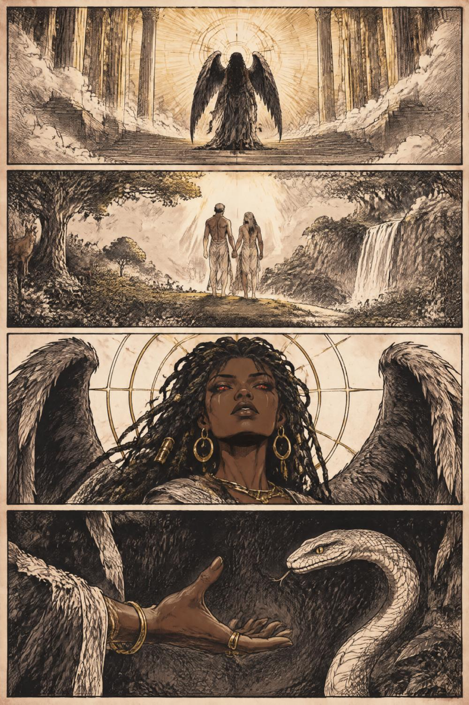
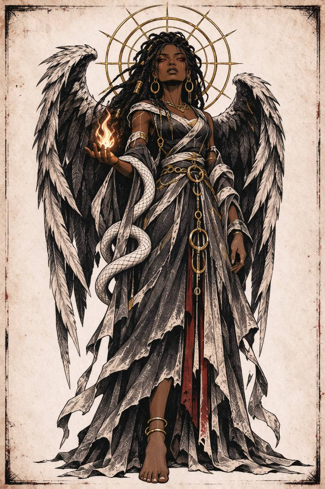
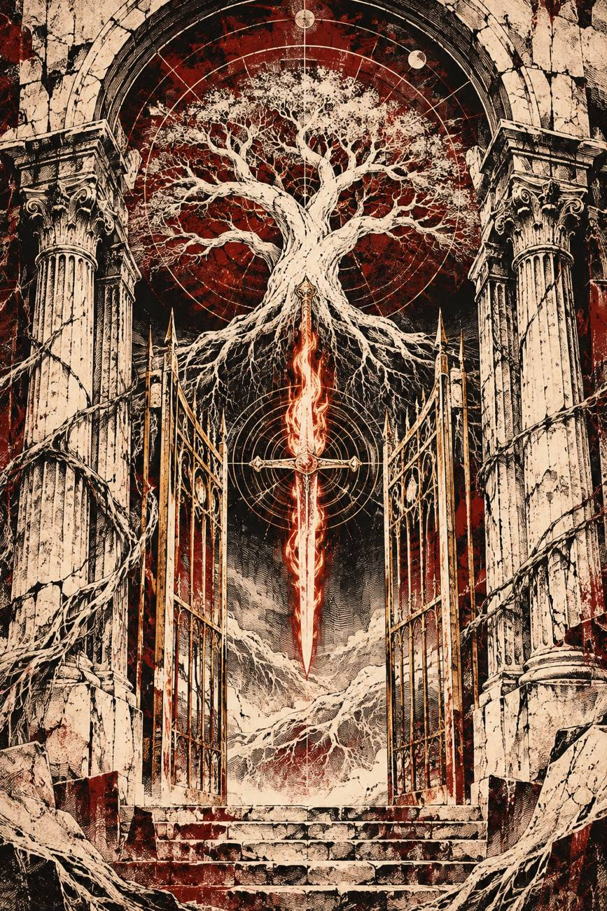
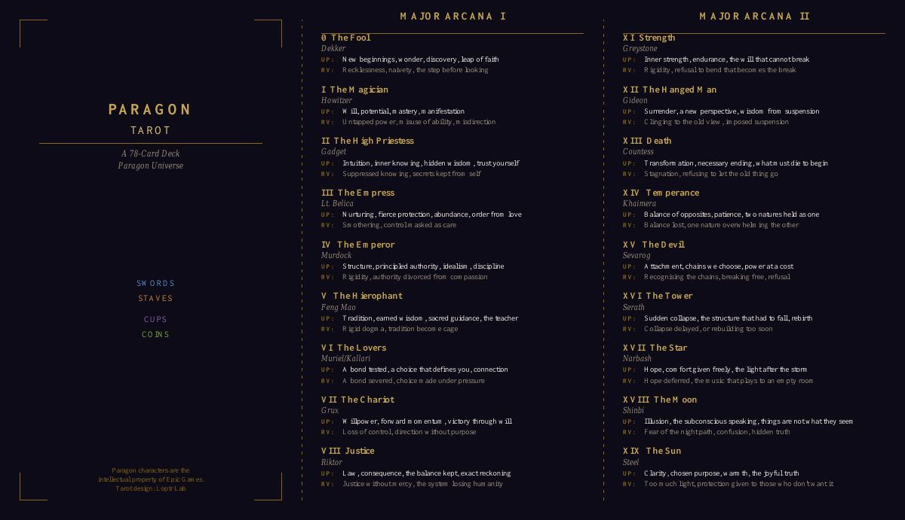
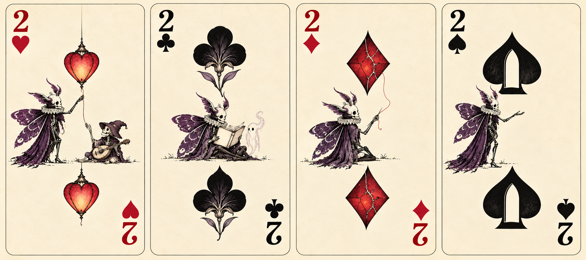
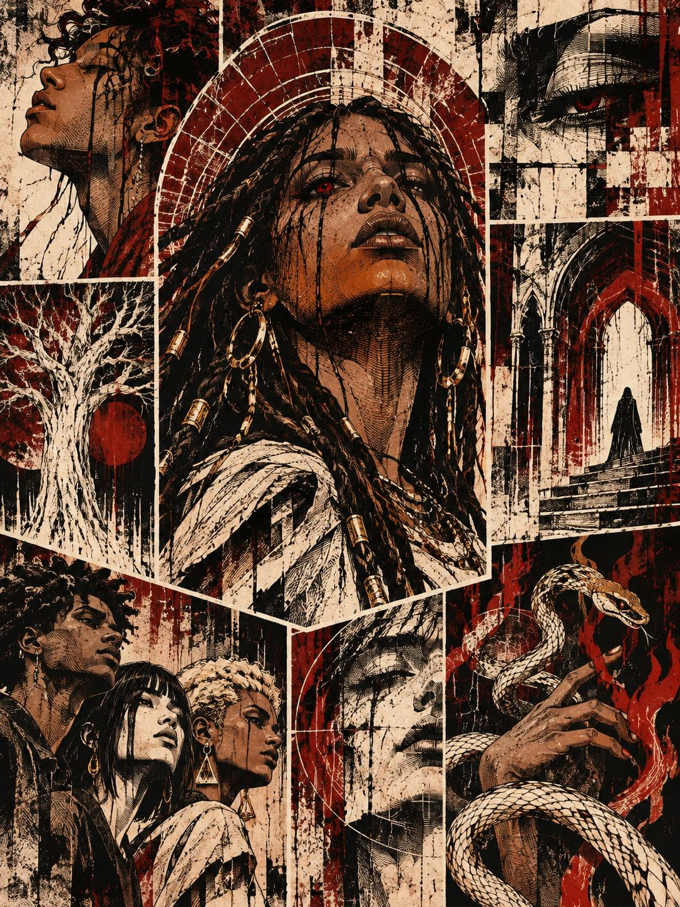

A surviving fragment
A threshold. A choice.
Manga proof; eye-colour correction pending.
I.B. Loud / Dominique Devereaux · Loptr Lab
Rebirth, a daughter of Death, must master a power that threatens the world she wants to protect.
A manga. A scattered oracle. A manuscript with something missing.
Development preview · Manga & oracle concept
Deck portfolio · Financials & viability · AI tools & process
The art carries the story. The missing pieces are part of the discovery. No complete edition or teaser is released here.

A recovered fragment / Sword sequence study

“If I could speak to You directly... what would I ask?”
The sword guards the way to the Tree of Life. Rebirth approaches with a question. This preview pairs existing setting art with the closing question from the creator-held manga draft; it does not add a new event or dialogue exchange.
The discovered deck / Editorial direction
A proposed original oracle drawn from the manga. Images first. Explanations elsewhere.

A threshold. A choice.
Manga proof; eye-colour correction pending.
Its absence belongs to the story.
A deliberate fictional gap, not a missing historical manuscript page identified by research.
The image asks.
The book opens the question.
Longer interpretations, reflective prompts and source notes belong here. Not a separate download or finished publication.
Dominique identifies the supplied skull and four suit symbols as this world’s summoning signs. This preview does not redraw them or assign unverified meanings to the suits. Ivory and crimson manifestations are the proposed signal of an answer across the Veil.
The incomplete deck is original fiction inspired by surviving Welsh manuscript traditions. It does not reconstruct lost passages of the White Book of Rhydderch or claim a historical origin for tarot. The exact relationship between fictional gaps and documented manuscript losses awaits research.
National Library of Wales: White Book of Rhydderch · Genesis 3:24: the guarded way
Deck portfolio / Art, systems & companions
A small portfolio of card systems, visual language, companion writing and print-layout work. Published artifacts, research and new concepts keep their own status.

Historical artifact / Not for purchase
A 78-card research scheme and an existing two-page guide: repeated headings, paired upright/reversed readings and a three-panel layout.
Concrete example: Strength / Greystone contrasts endurance with rigidity. Historical adaptation writing, not new canon.
Research artifact, not a manufactured or commercially cleared deck. The next Return to the Void proof uses original characters/placeholders.
Explore the historical system & layoutHistorical Paragon LWB · Not The Little Red Book or a verified Jupiter companion.

Visual studies / The vessel
Familiar cards. A guardian at the threshold. A standard 52-card pack with two proposed ranked jokers, intended for Bridge, Hearts, Spades and Bid Whist.
Existing AI-generated concept studies use heart lanterns, club flowers, repaired diamonds and spade doorways. Final faces remain in development; a complete 54-face set is not verified.
The Clubs study shows a paper book; the intended final object is PIXIE’s sigilled digital codex. The original Clubs image is preserved unchanged. The PIXIE guidance sigil remains a separate interface symbol.
PIXIE’s Reflection Deck: “Observe. Understand. Choose.” A separate design proposal: 22 archetype cards and 32 journey cards across Awakening, Listening, Repair and Choosing. Short titles, optional prompts and no reversals are proposed. PIXIE offers reflection; the reader keeps interpretation and decisions. Completed faces and an approved card-by-card guide remain open.

Both PIXIE decks are separate from the Death’s Daughter oracle and Violet’s decks.
Oracle concept / The spirit
The narrative spirit, drawn from the manga’s imagery and questions. Existing sequential proof, not a finished oracle deck.
The Little Red Book: a separate proposed companion for longer interpretations, prompts and source notes—not the historical Paragon LWB.
Reference art unchanged; anatomical left-crimson / right-gold correction remains pending.
Read the existing oracle and Little Red Book directionCard systems: the historical Paragon research maps suits and paired interpretations. Visual consistency: its existing guide repeats a dark/gold hierarchy; the new projects retain their own approved symbols. Readable layout and companion writing: the historical three-panel guide is an inspectable design artifact, not a completed accessibility or printer-proof certification. Print preparation: its research records card trim, bleed and resolution assumptions; those require fresh printer checks and a physical proof before use. No design artifact proves demand, revenue, rights clearance or finished manufacturing.
01 / The proposed series
She has the power to remake the world. First, she must learn to leave it room to live.
Rebirth is a daughter of Death. Her overwhelming power threatens the fragile world she wants to protect. Under her father’s guidance, she must learn agency, restraint and leadership—and decide whether she can seek knowledge on her own terms.
The question at the center of the story: can someone created within an established order determine her own place in it?
Genre: mythic fantasy / speculative drama.
Proposed form: an illustrated on-site manga with sparse dialogue, an original oracle-deck concept and a longer companion, The Little Red Book. The diary voice remains a separate development source.
02 / A voice before a world
The diary offers a close view of what Rebirth notices, misunderstands and learns. These short excerpts already exist in The Daughter’s Curriculum; their selection here proposes a prose direction, not a newly published chapter.
“How do you apologize to a piece of carved obsidian? You don't. You just learn to stay further away from the things you love.”
“I used to think Death was the end. Now I realize he’s the only thing keeping the beginning from burning up.”
03 / The existing origin
The manga’s five-chapter origin stays intact. Panel pacing and chapter length remain editorial decisions; the diary excerpts are not presented as a one-to-one replacement for these chapters.
Heaven’s prohibition on angelic procreation is broken; Satan seethes.
The serpent enters Eden to sever the divine bond between Adam and Eve.
Death forms his daughter from a fragrant nest of cinnamon, frankincense and ancient fire.
Cherubim and a turning sword guard the way to the Tree of Life.
Rebirth approaches the flame to ask God a question directly—to walk the path this telling imagines Eve feared.
A separate five-lesson structure explores leadership through consequence. It informs the character’s education, without rewriting the origin chapters or certifying current game rules.
These are narrative-development lessons. Veiled Dominion’s own sources govern accepted mechanics and implementation.
04 / The reader experiment
The on-site manga is the first audience test. Before expanding the world, we want to understand whether readers care about Rebirth, follow her choices and return. Wattpad remains an optional discovery route, not a launched edition.
Once chapters are published, record actual reads, votes, comments and feedback about clarity, characters and pacing. Record return behavior only where the platform makes it measurable; chapter totals alone do not identify returning readers.
Early interest is a signal to investigate. Engagement means readers spend time, return or discuss. Commercial demand needs separate evidence of willingness to pay—none is established here.
No experiment results yet. No readership target, conversion rate or revenue is presented as achieved. No tracking or signup system is added to this page.
Planning goals / first 90 days after launch: 200 distinct episode-one starters, 100 completions, 40 returning readers and 20 substantive responses from distinct people. No results are claimed. Distinct-reader and return measurement are not implemented; page views cannot stand in for people.
Packaged manga and deck downloads remain withheld pending viability review and Dominique’s separate release decision. Spending is assessed in small tests against expected benefit, current expenses, debt obligations and available cash. Engagement is not game demand or profit.
Candidate income routes are paid manga editions, the oracle deck and companion book; reader interest may also guide a separately scoped game prototype. These are proposals, not available products or demonstrated demand. A public cost ledger, confirmed production budget, prices and break-even calculation are not yet available. Before a spending decision, record cash costs, existing credits used, time, delivery costs and the evidence that would justify the next test. Grants and donations are funding, not operating profit.
PrintNinja’s published November 2 examples are manufacturing benchmarks, not quotes for our finished products. Minimums: 500 card decks; 250 comics.
| Example specification | Quantity | Published total |
|---|---|---|
| 54-card poker deck, Blue Core 280 GSM, printed tuck box | 500 | $1,343 |
| 54-card poker deck, Black Core linen 310 GSM, printed tuck box | 500 | $1,839 |
| 32-page colour comic, 6.625 × 10.25 inches, saddle stitched | 500 | $1,580 |
The oracle deck and Little Red Book need separate specifications and quotes. MakePlayingCards is the alternative for prototypes and smaller runs: standard products can be ordered as a single deck. Jupiter Lenormand is an existing 60-card design by I. B. Loud IVXX, listed on MakePlayingCards. Keep its published edition separate from new deck-production estimates.
Compare equivalent card counts, stock, packaging, proofing, freight, duties, taxes, fulfillment, platform fees and unsold inventory. Landed unit cost equals the full production-and-delivery cost divided by sellable units. Break-even sales equal unrecovered fixed costs divided by contribution per sale, rounded up; no sales price or margin is assumed. Historical commissioned-art costs, future creative/production labour, manufacturing and fulfillment remain separate ledger categories; existing art expenditure is not a new printing quote. A lower unit price alone does not justify a larger cash commitment.
PrintNinja card specifications and benchmarks · Comic specifications and benchmarks · MakePlayingCards · Production and funding resources on Made Sick (resource additions awaiting publication)
Before collaborating: The Threshold introductory class
Before launch, agree the release cadence and review questions. Readers may comment on Wattpad when chapters exist; participation and interest in other projects stay voluntary. Feedback informs revision, not a transfer of authorship, rights or canon authority.
05 / The creator & studio
I.B. Loud / Dominique Devereaux writes across fan communities, original fiction and interactive story experiments. Fan fiction offered a place to test voice, character and consequence; independent world-building carries that practice forward.
Loptr Lab connects creative production, accessible games, training and research. Its projects retain their own purposes, sources and rights. The studio’s people-over-profit mission places creative practice and accessibility before expansion for its own sake.
06 / A wider creative practice
Agency, power and consequence recur across the work. A shared theme is not a fictional crossover, a shared runtime or permission to merge projects’ canon.
The mythic origin and proposed first-person Wattpad serial. Pre-publication development.
Explore the proposed seriesThe existing five lessons in leadership, choice, sacrifice and restraint.
Read the origin and lesson structureAn existing contemporary narrative expression of related themes, with its own distributed-story framework.
Read the existing frameworkAn original strategy-game project exploring consequences through playable mechanics. Its repository controls game rules and canon.
Explore Veiled DominionA separate original gothic-forensics project with its own canon and rights considerations.
Explore Violet’s RevengeThe creator’s ongoing narrative and interactive-story experimentation.
Explore the existing Story LabThe separate Rebirth, Death’s Daughter film treatment is a standalone reimagining. It is not an accepted sequel to the manga or a new chapter of this proposed serial.
07 / Evidence & development
Canonical historical timeline · IP and rights matrix · Existing AI-assisted story-development process record
The Legend of Lady Violet and Sebastian; Violet's Revenge; The RIM Experience; Death is Only the Beginning; My Name is Luna; The Beast; SoulCaliber: The Birth of the Leo Blade; In Penny We Trust.
These titles are transcribed from the brief. They are not individually verified story links, and inclusion does not classify every work as original, licensed or commercially reusable.
Dominique states that Lady Violet predates the later Ren-inspired adaptation; a Ren song prompted a recollection and adaptation of the character, proposed for collaborative consideration. Dominique subsequently returned to independent character and original-IP development.
This is the creator’s account, pending primary historical corroboration. It does not establish another person’s private statements or motives. No approval, participation, endorsement or license from Ren is claimed; his work and IBLoud’s work remain distinct intellectual property.
On November 9, 2026, the separate Made-Sick/PIXIE source-review test searched ibloud.xyz public repository records, examining 27,490 records spanning November 13, 2023–November 6, 2026. It found 31 posts matching the normalized full Diary of Death’s Daughter title, and 107 original-text matches across the tested story phrases. These counts describe the reviewed public collection, not Wattpad readership or independent proof of story ownership.
These are the author account’s public records, returned through a Bluesky public repository relay and linked to the original posts. The search tool was verified through a local HTTP MCP interface; direct PDS access and installed PIXIE plugin activation remain unverified. The posts document publication of the quoted words, not the truth of any underlying rights or collaboration claim.
Read the dated retrieval and coverage record · Explore all matching source records
This is a selected evidence sample, not an exhaustive history of the creator’s work. Both retrieval records are on an unmerged review branch.
08 / Before you turn the page
No launch is claimed. Explore the existing IBLoud author profile or the proposed-series section on this page. No new chapters have been published by this work.
No. The proposed serial should introduce Rebirth, her relationship with Death and the stakes of her power on its own. The reading map is optional context.
This is a proposed original mythic-fantasy development. The historical catalog includes transformative work as well as claimed original material. Third-party characters, music, art and other protected expression do not transfer into the serial with the creator’s experience.
It is a narrative-development source, not a certification of implemented mechanics. Veiled Dominion’s owning repository governs its rules, licenses and canon.
For now, review the premise, voice and page clarity. Leave public pitch feedback through the existing GitHub workflow if you choose; posting requires a GitHub account. Keep private material out of public issues. Wattpad chapter comments become relevant only if chapters are later published.
09 / Authorship & stewardship
The studio’s stated objective is to preserve authorship, credit, editorial independence and appropriate succession planning for future heirs. No legally executed succession plan or completed rights clearance is claimed.
The canonical matrix distinguishes claimed original works, transformative fan archives and structural inspiration. Adaptations remain proposals unless accepted through the owning project’s canon process. Unverified collaboration history is not a license; third-party music, recordings, likenesses and artwork require item-specific review before reuse.
The selected artwork and diary excerpts come from the creator-held development sources requested for this review. Their inclusion does not replace contributor attribution or chain-of-title review. A copyright notice alone does not establish ownership, and a collaboration proposal does not grant adaptation rights.
ChatGPT/Codex assisted the editorial copy and site implementation. The supplied sequential manga proof was generated with Pollo AI. Yuumeh was used for character-reference development. Exact image models, versions and per-image generation records for the supplied reference artwork remain to be documented; no tool-specific authorship or rights clearance is implied.
AI assisted the editorial copy and page implementation. The source chapter structure and quoted diary passages were preserved; new pitch phrasing is proposed for Dominique’s review. The full owner-only Drive documents, private correspondence and agreements are not republished or embedded.

The next page is a choice.